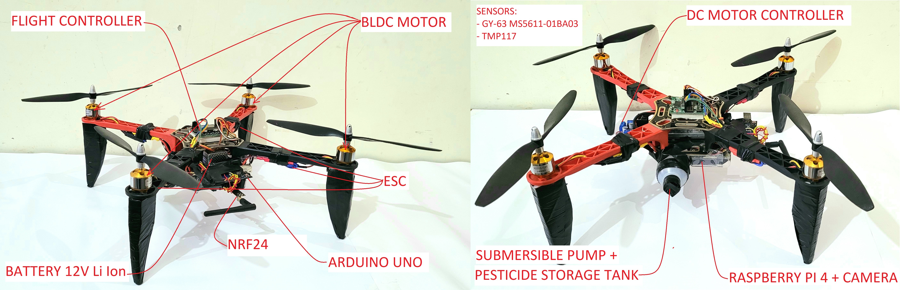

This project aimed to develop a pesticide-spraying quadcopter drone equipped with a camera and real-time surveillance capabilities. The primary goal was to enhance agricultural practices by providing an efficient and precise method for pesticide application. The drone was designed to carry and distribute pesticides accurately over crops, reducing human labor and potential health risks. Additionally, the integrated camera and real-time surveillance system enabled farmers to monitor crop health, identify areas of concern, and make informed decisions regarding pest management strategies. This technology aimed to improve agricultural productivity, optimize resource utilization, and promote sustainable farming practices.
|  |